Curries
🎵 Music to Enjoy with This Page
 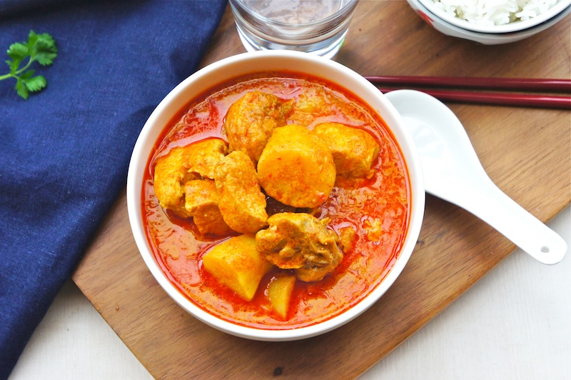
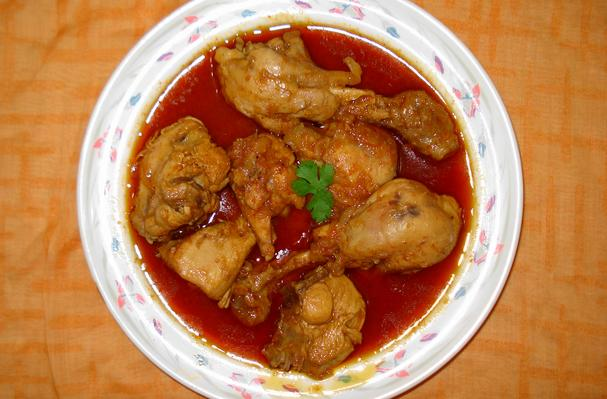
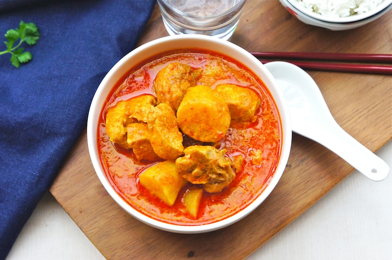
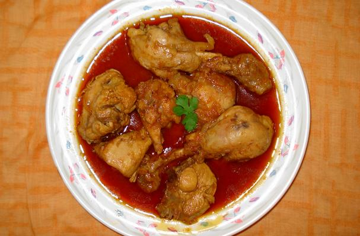
Burmese Chicken Curry
Burmese Chicken Curry is a mild yet flavorful curry made by slow-cooking chicken with onions, garlic, ginger, turmeric, and potatoes. As the curry cooks, the oil naturally rises to the top — a traditional Burmese technique known as “oil-return” (hsi pyan). The dish is savory, slightly sweet from onions, and not too spicy unless chili is added.
Full Recipe
| Prep Time | 15 minutes |
|---|---|
| Cooking Time | 45–50 minutes |
| Servings | 4 |
Nutrients per serving
| Calories | ~320 kcal |
|---|---|
| Protein | ~26 g |
| Fat | ~20 g |
| Carbs | ~12 g |
| Sodium | 600–800 mg |
Ingredients
- Chicken – 500 g (bone-in preferred)
- Onions – 3 large, finely sliced
- Garlic – 6 cloves, minced
- Ginger – 1 tbsp, minced
- Potatoes – 3 medium, finely sliced
- Turmeric powder – 1 tsp
- Chili powder – 1–2 tsp (optional)
- Fish sauce – 1–2 tbsp
- Oil – 4–5 tbsp
- Water – as needed
- Salt – to taste
Steps
- Season the chicken with turmeric powder and salt.
- Heat oil in a pot and fry onions until soft and lightly browned.
- Add garlic, ginger, turmeric, and chili powder; fry until fragrant.
- Add chicken pieces and stir until coated with spices and lightly browned.
- Add sliced potatoes and cook until lightly browned.
- Add fish sauce and about 1 cup of water.
- Simmer on low heat for 40–50 minutes until the oil separates.
- Adjust salt to taste and serve with steamed rice.
 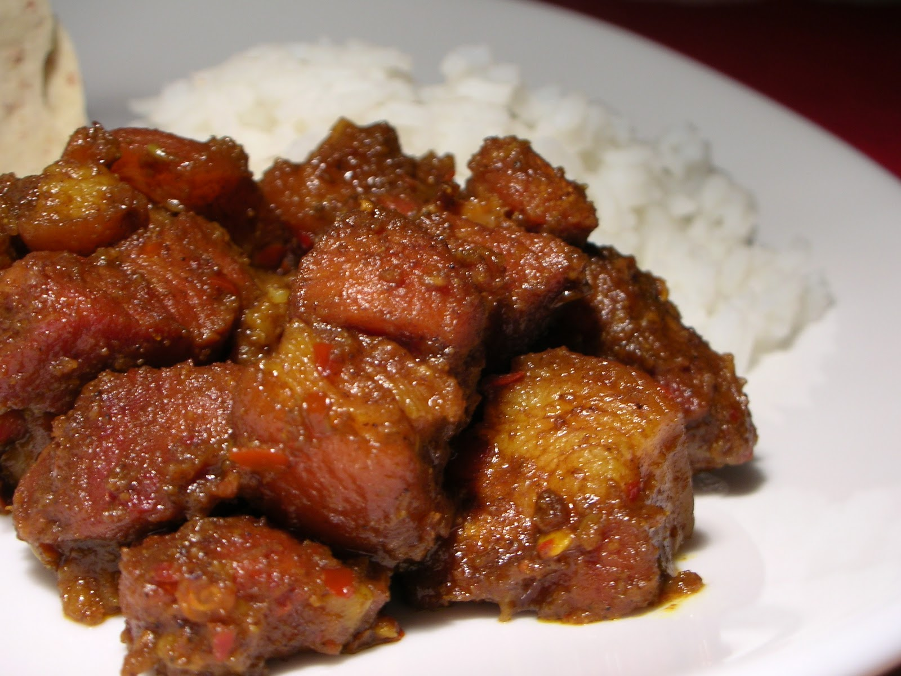
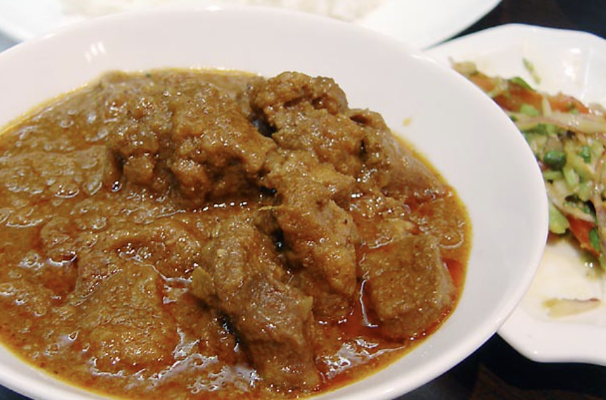
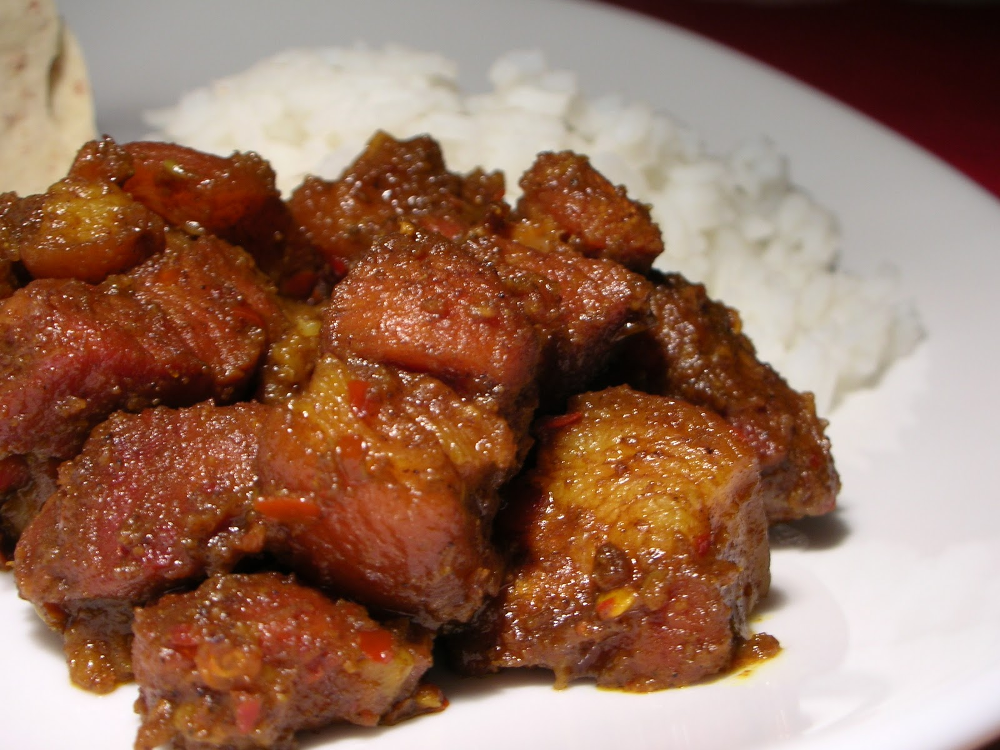
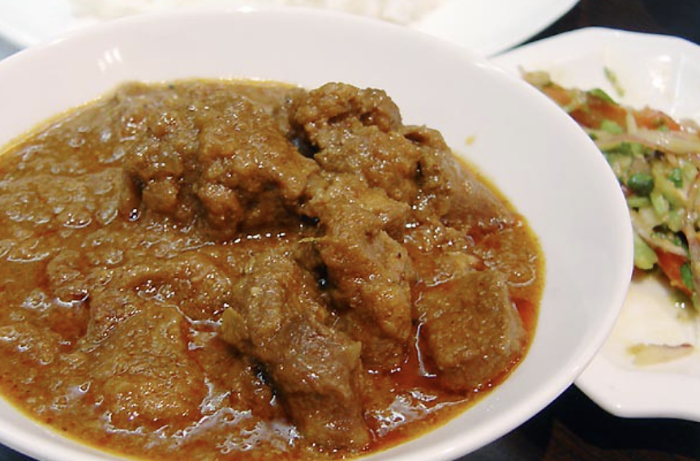
Burmese Pork Curry
Burmese Pork Curry is a hearty curry commonly made with pork belly or pork shoulder. The pork is simmered for a long time until tender, and the sauce becomes thick and oily, which intensifies the flavor. It tastes rich and meaty, slightly salty from fish sauce, and very aromatic from onions and garlic.
Full Recipe
| Prep Time | 20 minutes |
|---|---|
| Cooking Time | 60–70 minutes |
| Servings | 4 |
Nutrients per serving
| Calories | ~430 kcal |
|---|---|
| Protein | ~24 g |
| Fat | ~35 g |
| Carbs | ~10 g |
| Sodium | 700–900 mg |
Ingredients
- Pork belly or pork shoulder – 500 g
- Onions – 3 large, sliced
- Garlic – 8 cloves, minced
- Ginger – 2 tbsp, minced
- Turmeric powder – 1 tsp
- Soy sauce – 1 tbsp (optional, adds color)
- Fish sauce – 1 tbsp
- Oil – 4–5 tbsp
- Water – as needed
- Salt – to taste
Steps
- Season the pork with soy sauce (optional), turmeric powder, and salt.
- Blanch the pork briefly in boiling water, then drain (this helps tenderize and remove impurities).
- Heat oil in a pot and fry onions until golden.
- Add garlic and ginger; fry until fragrant.
- Add turmeric (and chili powder if desired) and stir well.
- Add pork and stir-fry until the meat releases fat and is lightly browned.
- Add soy sauce (optional) and fish sauce.
- Add 1–2 cups of water and simmer on low heat for about 1 hour.
- Cook until the sauce thickens and the oil rises to the top.
- Serve hot with warm rice.
 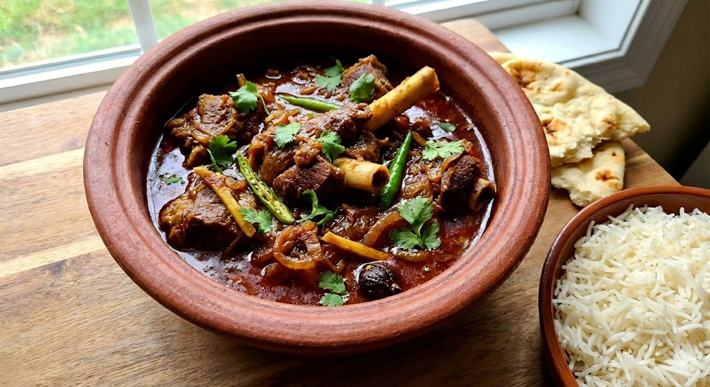
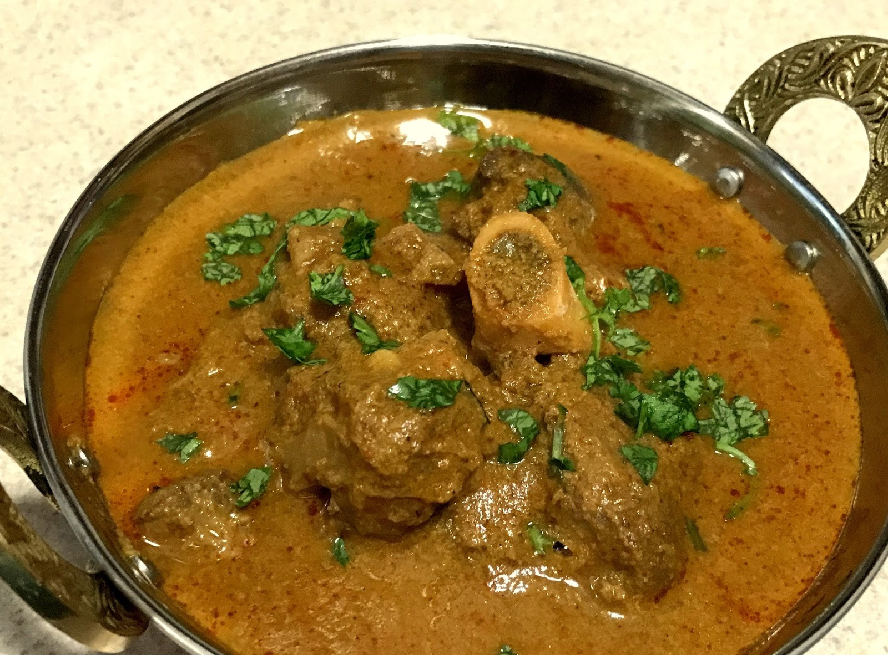
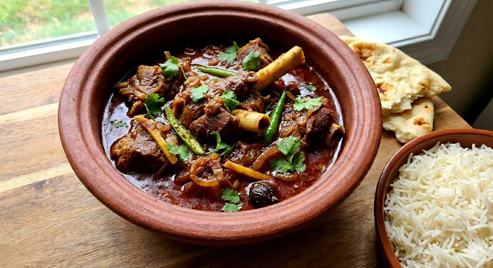
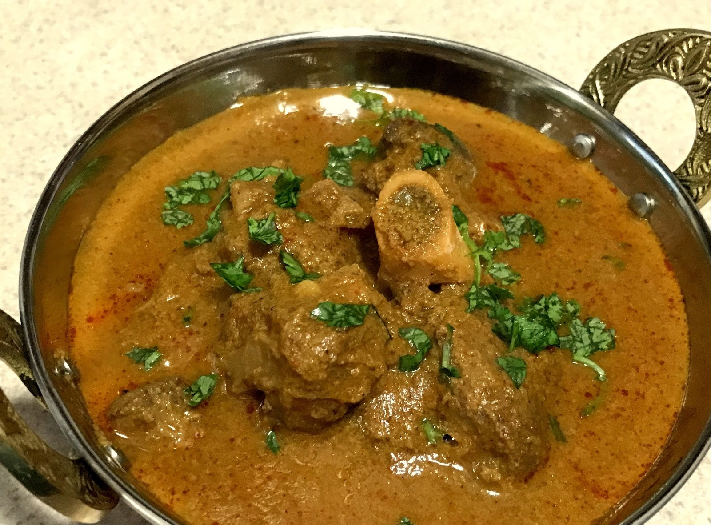
Burmese Mutton (Goat) Curry
Burmese Mutton Curry is a traditional dish made with goat or mutton, slow-cooked with turmeric, garlic, ginger, and sometimes curry powder. Because goat meat has a naturally strong flavor, this curry tastes bold and earthy. It is very aromatic, slightly spicy, and warming.
Full Recipe
| Prep Time | 20 minutes |
|---|---|
| Cooking Time | 1.5–2 hours |
| Servings | 4 |
Nutrients per serving
| Calories | ~370 kcal |
|---|---|
| Protein | ~28 g |
| Fat | ~24 g |
| Carbs | ~10 g |
| Sodium | 600–800 mg |
Ingredients
- Mutton (goat meat) – 500–600 g
- Onions – 3–4 large, sliced
- Garlic – 8 cloves, minced
- Ginger – 1 tbsp, minced
- Turmeric powder – 1 tsp
- Indian curry powder – 1–2 tsp (optional but common in Myanmar)
- Tomato – 1 large, chopped
- Oil – 5 tbsp
- Water – 2 cups
- Fish sauce – 1 tbsp
Steps
- Heat oil in a pot and fry onions until golden.
- Add garlic, ginger, turmeric, and curry powder; fry until fragrant.
- Add mutton and stir-fry for about 10 minutes.
- Add tomato and cook until softened.
- Add fish sauce and water, then cover and simmer for 1.5–2 hours.
- Cook until the meat is tender and oil rises to the top.
- Serve hot with steamed rice.
Burmese Beef Curry
Burmese Beef Curry is slow-cooked until the beef becomes very tender. The flavor is deep and rich because the onions are fried until deeply caramelized, giving the curry a darker color with a sweet and slightly smoky aroma. It is aromatic and can be mildly spicy depending on the chili.
Full Recipe
| Prep Time | 20 minutes |
|---|---|
| Cooking Time | 1.5–2 hours |
| Servings | 4 |
Nutrients per serving
| Calories | ~390 kcal |
|---|---|
| Protein | ~30 g |
| Fat | ~26 g |
| Carbs | ~11 g |
| Sodium | 600–800 mg |
Ingredients
- Beef (tenderloin or chuck) – 600 g, cut into bite-sized pieces
- Onions – 4 large, sliced
- Garlic – 12 cloves, minced
- Ginger – 2 tbsp, minced
- Lemon juice or plain (unsweetened) yogurt – 1–2 tbsp
- Tomatoes – 2, chopped
- Turmeric powder – 1 tbsp
- Chili powder – 1–2 tbsp
- Masala – 1–2 tbsp
- Pepper – to taste
- Fish sauce – 1–2 tbsp
- Oil – 5 tbsp
- Water or beef broth – 2 cups
- Cilantro – a small handful (add at the end)
- Salt – to taste
Steps
- Season the beef with turmeric, chili powder, masala, pepper, salt, fish sauce, and lemon juice (or yogurt). Mix well.
- Heat oil in a pot and fry onions until deeply caramelized.
- Add garlic and ginger; fry until fragrant.
- Add beef and stir-fry until browned.
- Add tomatoes and cook until they break down into the sauce.
- Add fish sauce and water (or beef broth), then cover.
- Simmer for 1.5–2 hours until the beef is tender.
- Reduce the sauce until oil separates and rises to the top.
- Stir in cilantro at the end.
- Serve with rice or paratha.
 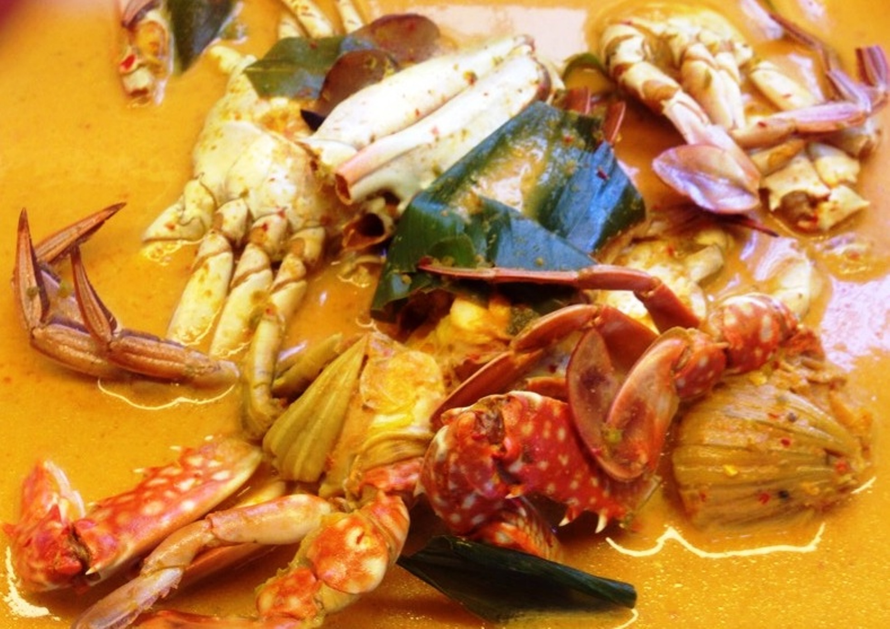
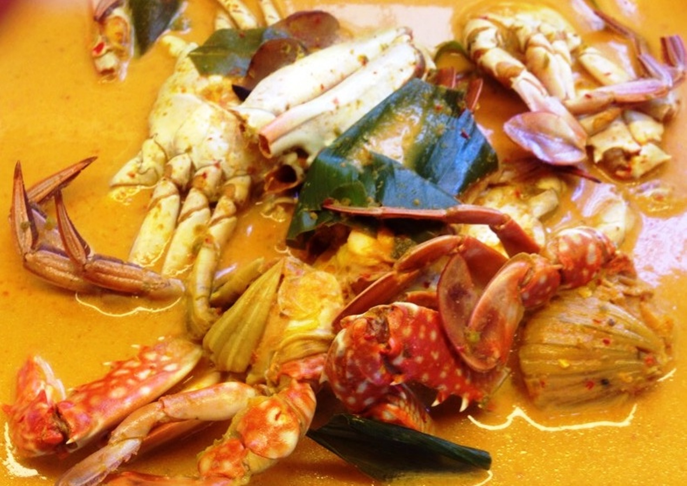
Burmese Crab Curry
Burmese Crab Curry is a flavorful seafood curry commonly enjoyed in coastal regions of Myanmar. Fresh crab is cooked with onions, garlic, ginger, turmeric, and tomatoes. The curry is mildly spiced and aromatic, with an optional addition of coconut milk for a richer taste.
Full Recipe
| Prep Time | 20 minutes |
|---|---|
| Cooking Time | 30–40 minutes |
| Servings | 4 |
Nutrients per serving
| Calories | ~280 kcal |
|---|---|
| Protein | ~24 g |
| Fat | ~14 g |
| Carbs | ~12 g |
| Sodium | 500–700 mg |
Ingredients
- Fresh crab (blue crab or mud crab), cleaned and cut – 1 kg
- Onions – 2, finely sliced
- Garlic – 6 cloves, minced
- Ginger – 1 tbsp, minced
- Tomatoes – 2, chopped
- Turmeric powder – 1 tsp
- Chili powder – 1–2 tsp (optional)
- Fish sauce – 1 tbsp
- Coconut milk – ½ cup (optional)
- Cooking oil – 3–4 tbsp
- Water – ½–1 cup, as needed
- Fresh coriander or spring onions – for garnish
Steps
- Heat oil in a pot and cook sliced onions until soft and lightly golden.
- Add garlic, ginger, turmeric, and chili powder; stir until fragrant.
- Add tomatoes and cook until they break down into a thick paste.
- Add crab pieces and coat them well with the curry base.
- Add fish sauce and enough water to allow simmering.
- Cover and cook for 10–15 minutes until the crab shells turn bright orange.
- Add coconut milk (optional) and simmer for another 5 minutes.
- Taste and adjust seasoning.
- Garnish with fresh coriander or spring onions and serve hot.